El diseño retoma elementos de la cultura mexicana y los transforma en propuestas actuales.
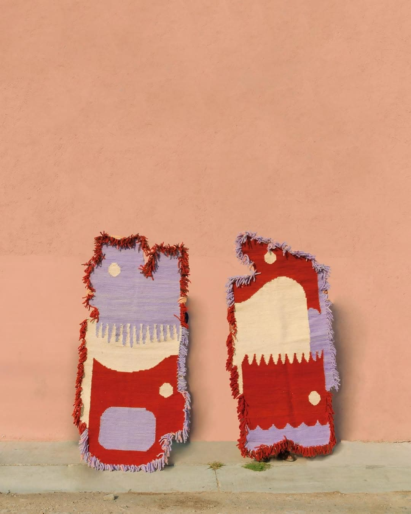
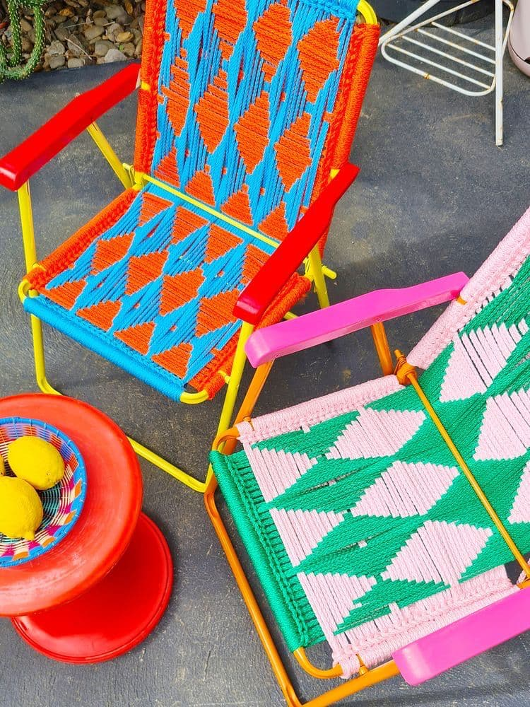
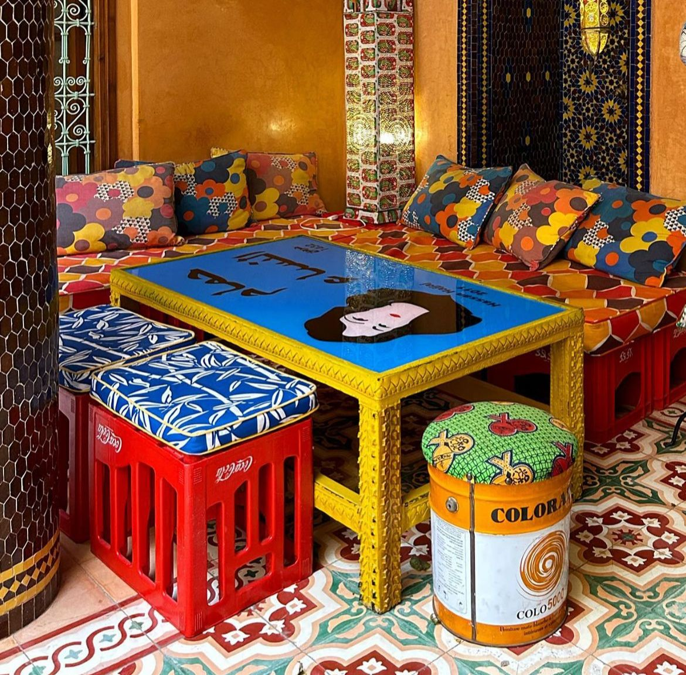
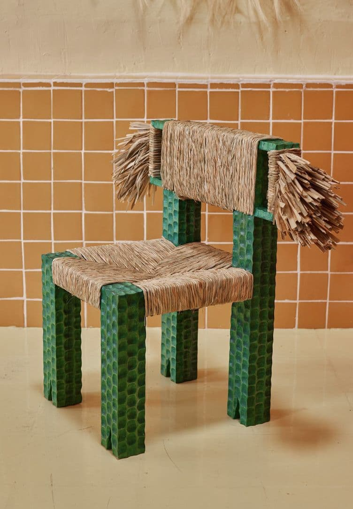
Se enfoca en reducir el impacto ambiental mediante materiales responsables y procesos éticos.
Materiales naturales o reciclados, Producción local, Procesos de bajo impacto, Diseño duradero
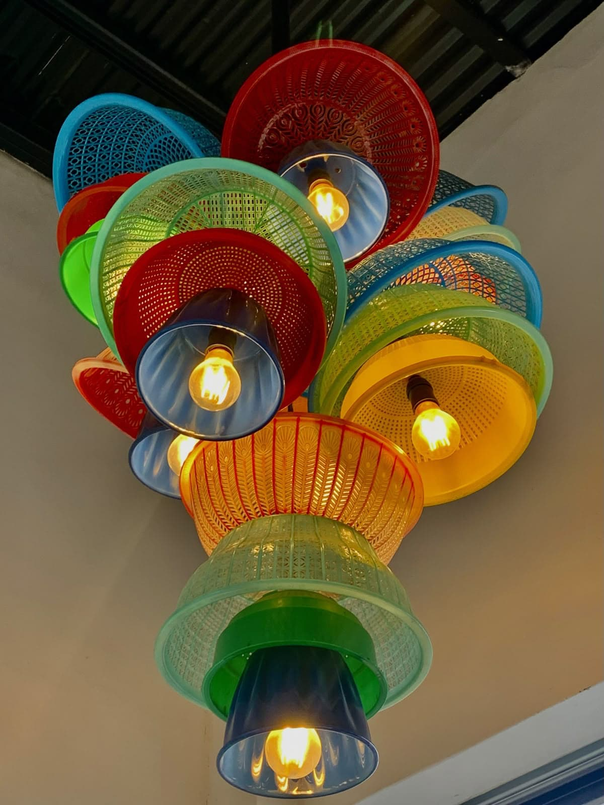
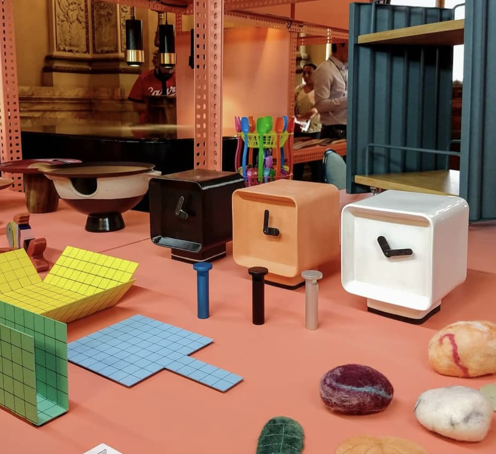
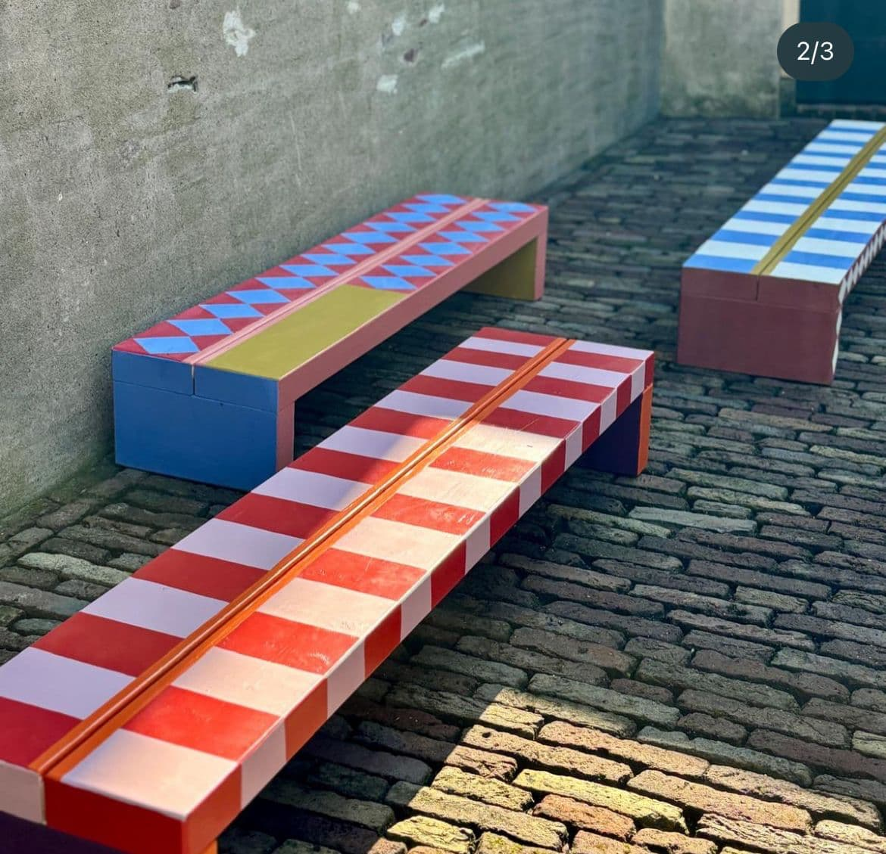
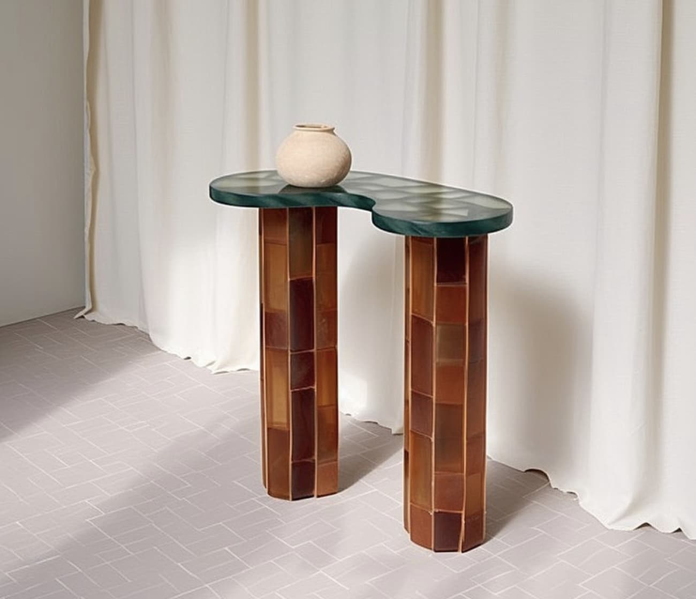
Exploración de materiales, formas y procesos para crear objetos innovadores y expresivos.
Mezcla de materiales (metal, vidrio, piedra) Formas orgánicas o escultóricas, Diseño conceptual, Piezas únicas
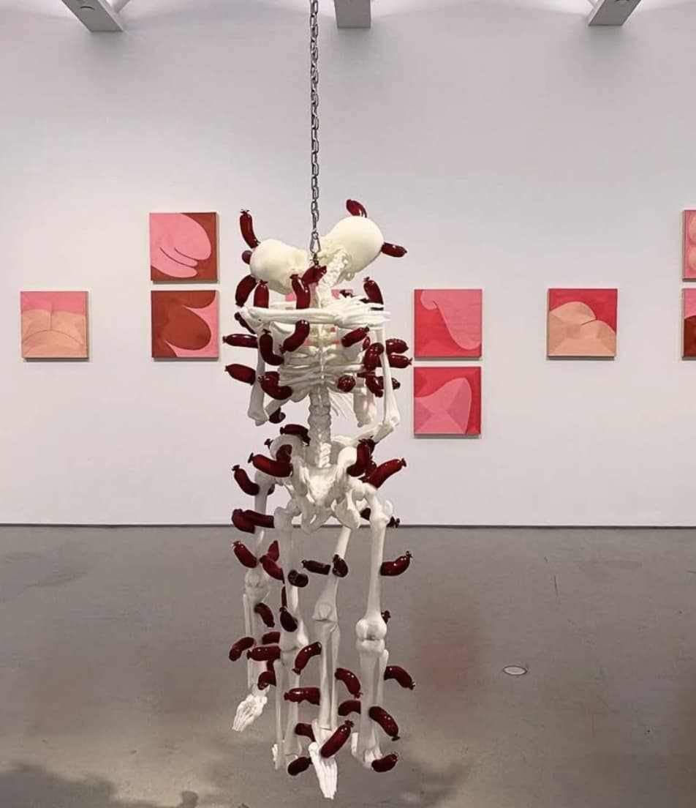
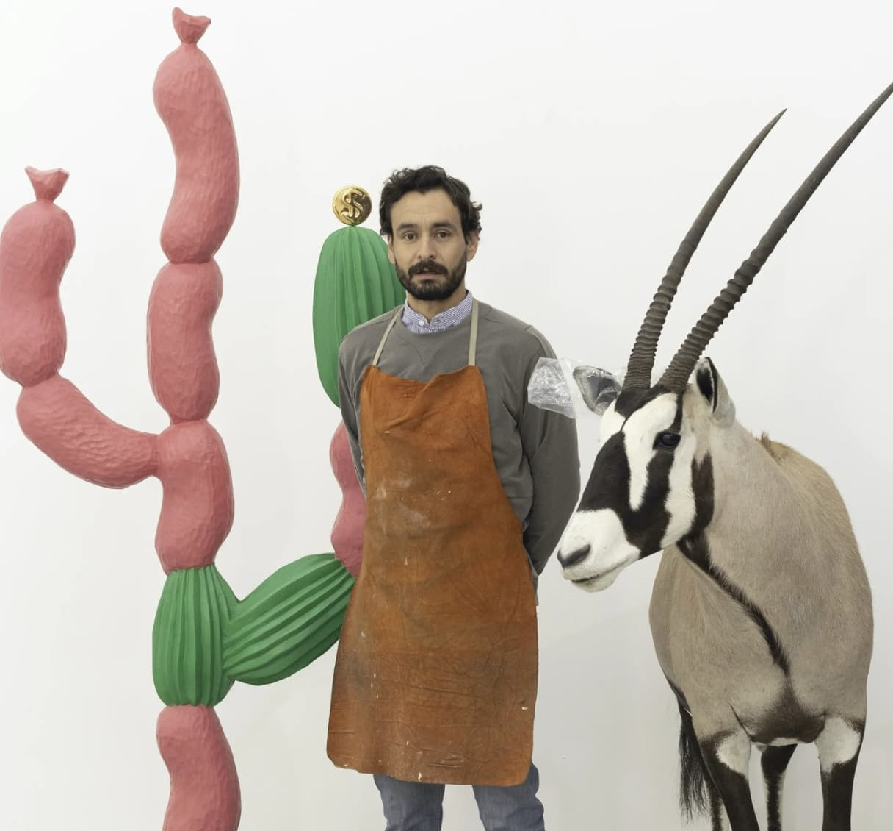
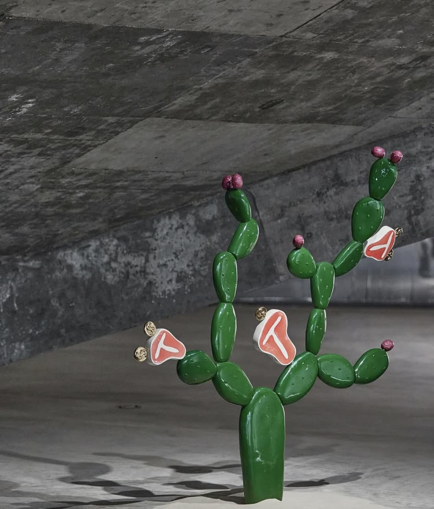
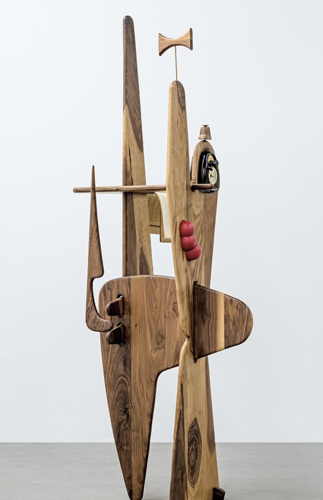